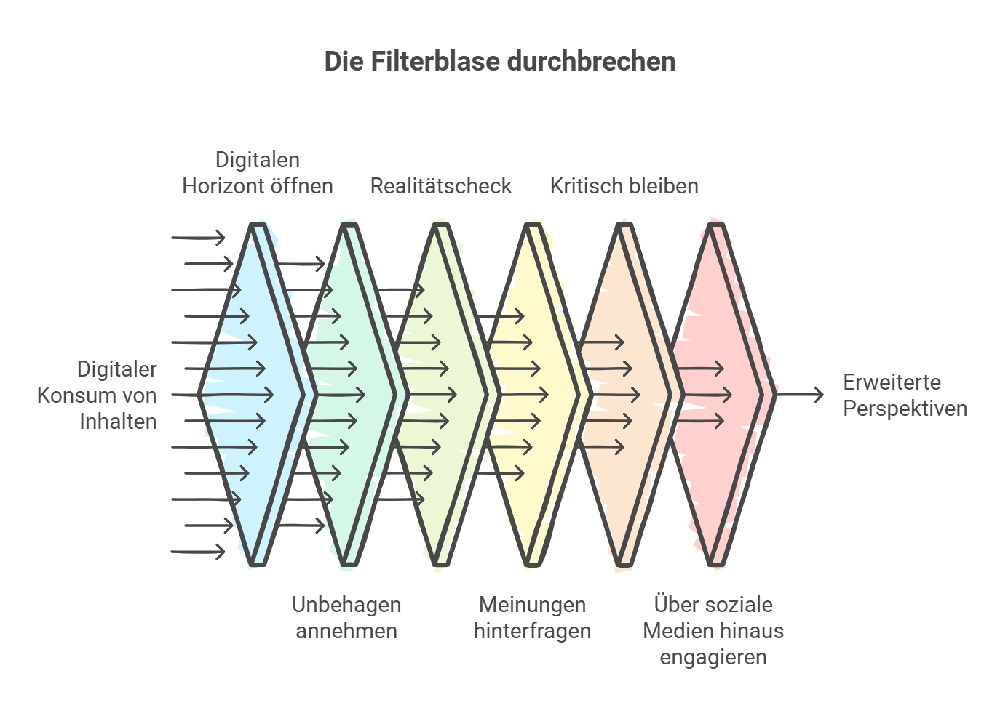

Die eigene Blase zu erkennen ist der erste Schritt – sie zu verlassen der entscheidende.
Filterblasen entstehen nicht über Nacht – und sie lassen sich auch nicht über Nacht überwinden. Aber es gibt konkrete Handlungen, die dabei helfen, den eigenen digitalen Horizont zu erweitern. Keine Regeln, sondern Einladungen zum Experimentieren. Denn das Durchbrechen der Filterblase ist ein kontinuierlicher Prozess, kein einmaliges Ereignis.
Sechs Wege raus aus der Bubble
1. Öffne deinen digitalen Horizont
Folge bewusst anderen Perspektiven, auch wenn sie zunächst fremd erscheinen. Unsere Online-Umgebungen sind stark von Algorithmen beeinflusst, die Inhalte nach bisherigen Vorlieben auswählen. Abonniere Kanäle, die unterschiedliche Ansichten vertreten, und lies Artikel aus Medien, die nicht deinem üblichen Konsumverhalten entsprechen. Das erweitert nicht nur den Wissenshorizont, sondern fördert das Verständnis für die Komplexität der Welt.
2. Embrace the Discomfort
Unbehagen bei neuen Sichtweisen ist kein Stoppsignal, sondern eine Chance zum Wachsen. Neue und ungewohnte Ideen können Unsicherheit auslösen, da sie oft im Widerspruch zu eigenen Überzeugungen stehen. Doch genau hierin liegt die Chance: Indem wir uns auf diese Herausforderungen einlassen, entwickeln wir eine differenziertere Perspektive und stärken unsere Fähigkeit, kritisch zu denken.
3. Reality Check ist Pflicht
Vergleiche deine Online-Wahrnehmung regelmäßig mit der Welt außerhalb deines Screens. Die Inhalte, die wir in sozialen Medien sehen, sind oft eine stark gefilterte Version der Realität. Regelmäßige Abgleiche mit realen Erfahrungen helfen, die eigene Wahrnehmung zu überprüfen. Besuche Diskussionen, lese Zeitungen oder spreche mit Menschen aus deinem Umfeld.
4. Hinterfrage deine Meinung – Vielfalt macht dich schlauer
Lass dich von neuen Ideen inspirieren. Unsere Meinungen basieren oft auf begrenzten Informationen oder einem einseitigen Blickwinkel. Durch bewusstes Hinterfragen und den Austausch mit anderen Ansichten wird die eigene Meinung fundierter und vielseitiger. Inspiration aus unterschiedlichen Quellen ermöglicht es, Vorurteile abzubauen und kreativer über komplexe Themen nachzudenken.
5. Bleib kritisch – auch bei Inhalten, die dir gefallen
Prüfe Quellen und durchschaue Algorithmen. Inhalte, die uns gefallen, bestätigen oft unsere bestehenden Überzeugungen – das macht es besonders wichtig, kritisch zu bleiben. Achte darauf, ob Inhalte von unabhängigen oder vertrauenswürdigen Plattformen stammen, und erkenne, wann Algorithmen dir nur zeigen, was du bereits sehen möchtest.
6. Geh raus aus der Bubble – die Welt ist größer als dein Feed
Tausche dich mit anderen aus und entdecke die Realität jenseits von Social Media. Soziale Medien bieten nur einen kleinen Ausschnitt der Realität. Der persönliche Austausch mit Menschen aus verschiedenen sozialen, kulturellen und geografischen Hintergründen ist essenziell. Durch reale Begegnungen kannst du neue Einsichten gewinnen und dich von der Begrenztheit deines Feeds lösen.

Sechs Wege raus aus der Bubble – als Erinnerung für den Alltag
Infografik zum Download
Die sechs Punkte als handliche Infografik – zum Ausdrucken, Teilen oder für den Unterricht.
↓ Infografik herunterladen (PNG){kind=link}
Präsentiere diese Tipps nicht als strikte Regeln, sondern als Einladung zum Experimentieren. Das Durchbrechen der Filterblase ist ein kontinuierlicher Prozess – und ein offenes Diskussionsklima, in dem auch unbequeme Perspektiven Platz haben, ist die wichtigste Voraussetzung dafür.